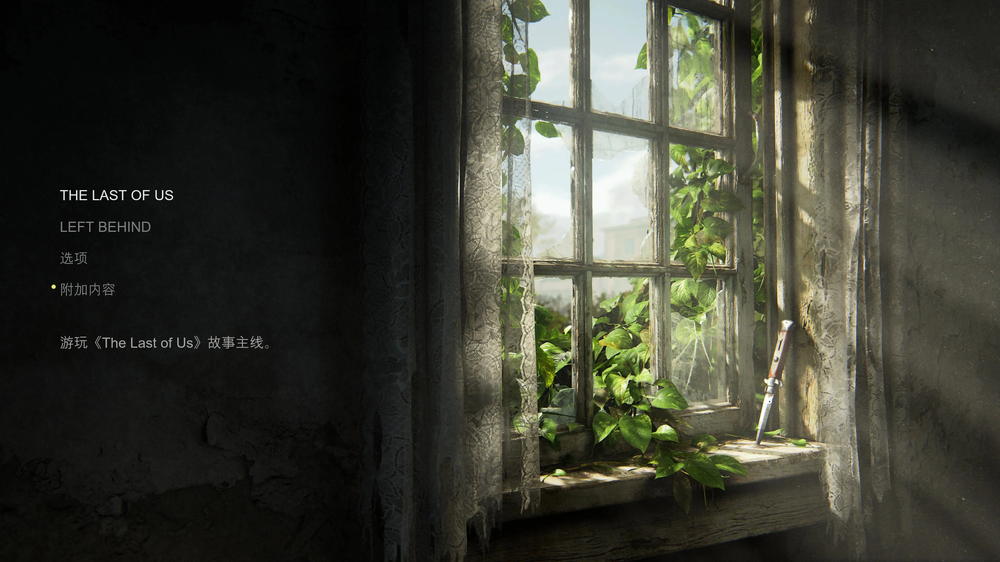
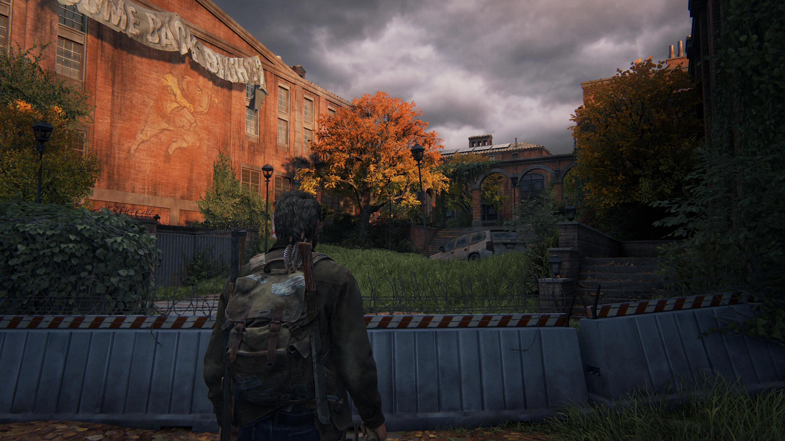
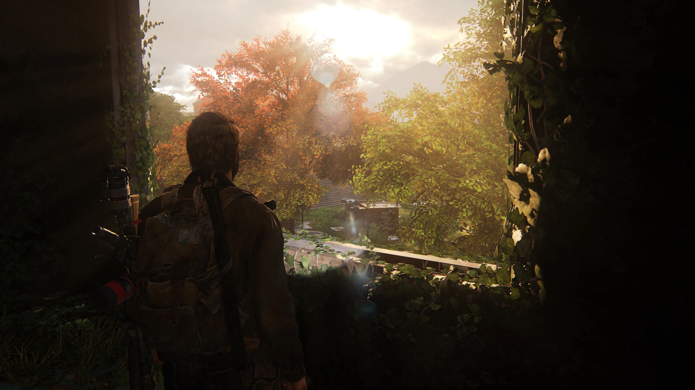
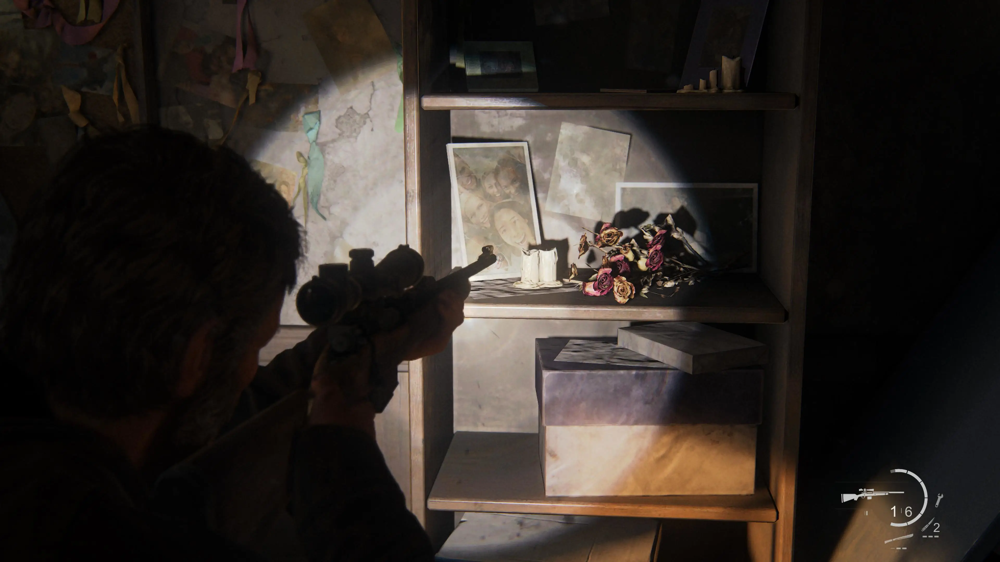
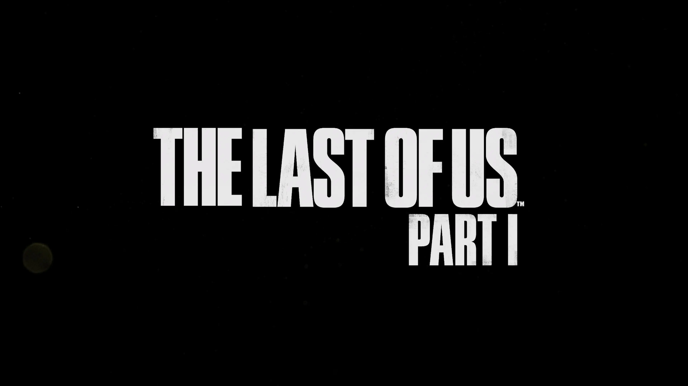

|2025-06-24|
游玩环境：
- PlayStation 5 silm
- DualSense
- SANC N50pro6
- ￥9.9 原道耳机
- 实体光盘
现在回看，PlayStation 3 真是一台很神奇的机器，IBM PowerPC 的“Cell”复杂架构和高昂定价似乎注定了这台机器的暴死结局，但是最后这台机子却能在第七世代这个属于 Wii 的大逆风世代打出了不错的成绩，真的令人惊叹。《最后生还者》作为 PS3 的最终压轴大作，感谢顽皮狗强大的炒冷饭能力，我能在这第九世代的主机上继续体验这部广受好评的作品。不过 568 港币的定价是不是太高了？无所谓，同城 240 实体盘会出手。
我一直是任系玩家，到现在除了 PS5 我也没有什么高性能设备，进而使用最现代技术重置的《最后生还者 第一部》在画面上对我的震撼是纯粹的，这真的是我目前玩过画质最好的游戏了。乔尔、艾莉的微表情清清楚楚，循声者和大块头的写实压迫感十足，场景互动、水质和植被的真实感惊人。我在这里多放几张图片展示一下，大学这一章的秋景真的是震撼，和剧情结合堪称完美。
至于游戏的玩法，这里我要狠狠批评一下。为什么操作枪支的时候不能调用陀螺仪？DualSense 是有陀螺仪的，虽然在小机器人里面体验一般（不如任天堂系瞄准手感好），但完全是合格可用的。在一个算是生存恐怖类的游戏里，本身出怪就是有很多恐怖元素在的，人是会慌的，再加上弹药本身就不足，你告诉我我要在这种情况下全程只用右摇杆瞄准射击？会战术包抄的人类敌人和疯狗一样的感染者可以完全甩开我的准星（调灵敏度也没有用），搞得我只能去打躯干而不是头进而浪费好几发子弹。虽然说我使用子弹过多确实因为是我在战术上更偏向正面对抗一些，但是这并不是游戏本身射击体验稀烂的借口。本身我就把游戏就设成休闲模式来更好地体验剧情，稀烂的射击体验又迫使我从中期开始就加上了自瞄来改善战斗体验。不过游戏的射击手感还是不错的，和自适应扳机契合地相当好，不同的枪械手感真的能从 DualSense 的反馈上体验出来。
《最后生还者 第一部》是唯二能让我在通关游戏后去网上翻找网友剧情评论的游戏。前一个是《十三机兵防卫圈》。因为那游戏的剧情实在是过于复杂，找一个解说视频看会比你对着游戏里的时间线一个一个事件扣节省很多时间。而我之所以看最后生还者的剧情评论是因为我想看看大家是怎么理解乔尔在最终章里的行为的。这里可以看一下游民星空里一篇文章的解释。
……也就是说正常的动物实验手段已经进展到非常不错的阶段了（游戏里面是说实验不太成功，但这只是相对彻底成功而言，在乔尔看来，活蹦乱跳路过的那群没有明显攻击性行为的猴子已经足够说明问题了）。别告诉我医院这边的人不知道那边的进度，这边的人根本就是大学那边迁移过来的。
游戏里面让你通过乔尔的眼睛耳朵听到看到了之前大学的成果，到了这边不说结合动物实验成果，也不说取血离心研究血清血浆对里面可能存在的抗原抗体进行提纯，脊椎穿刺取脑脊液也不弄，直接就下结论必须开颅把感染的脑子切下来研究！而且乔尔一醒就是枪对着头，领导做了几句思想工作，就让乔尔滚蛋了。
说的在理，但是对这个游戏我没有这么明确的爱恨情仇，我只感到在末世的压力前，我们，就是“US”的无力感。我们救不下乔尔的女儿莎拉，射杀她的士兵没有错，下命令的上级也没有错。救不了黑人兄弟亨利和山姆，救不了自杀的法兰克，救不了纸条里描述的各种覆灭的小营地。乔尔和艾莉在这横跨美国的旅途上无力改变的事情太多太多了，在一次次的离别和磨难中，两人成为了互相唯一的依靠。之前两人的羁绊，再加上艾莉在危难时如亲人般的不离不弃，乔尔深藏二十余年的父爱最终被激发。艾莉就是他的女儿，他不能再失去一次女儿了。火萤可靠吗？他们一次次失败，这一次就能成功吗？乔尔不知道，他只知道在这时，他可以救艾莉回家，而不是像他这前半生经历这样的事情时一样无能为力。所以他就去了。最后，只剩下乔尔和艾莉。艾莉还能找到她喜欢的漫画书，乔尔还能为自己的女儿铲除前路的艰难险阻，这就够了。这就是“The Last of US”的含义。
